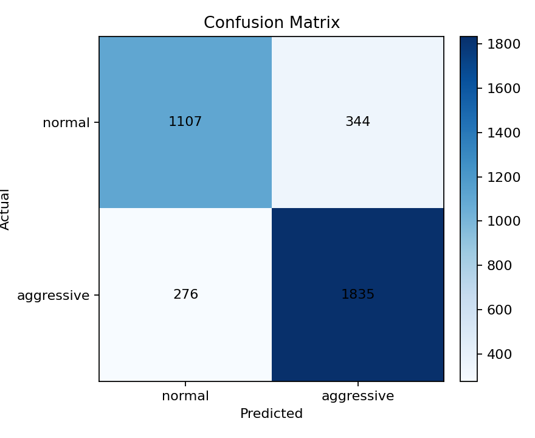
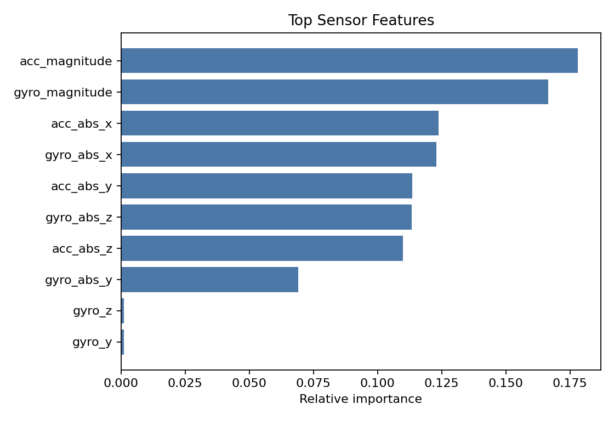
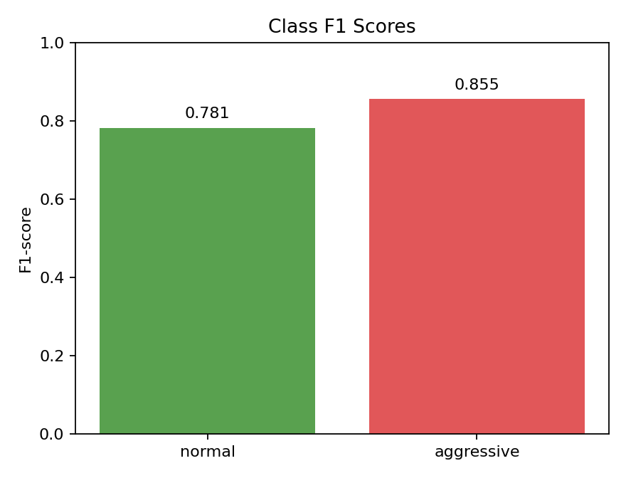
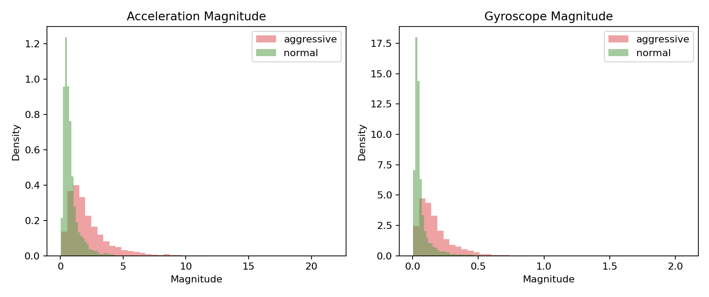

주행 센서 데이터 학습, 새 데이터 적용, 운전 습관 분류, 차량 상태 이상 탐지, 점검 권장 리포트 생성까지 현재 프로젝트에서 구현한 내용을 한글 PDF로 정리했다.
현재 프로젝트의 머신러닝 핵심은 Mendeley 스마트폰 센서 데이터를 전처리한 뒤
표준화 k-NN으로 normal과 aggressive 운전 습관을 분류하고,
그 결과를 시각화 및 차량 점검 리포트 흐름으로 연결한 것이다.
차량 주행 데이터와 차량 상태 데이터를 분석해서 운전 습관을 분류하고, 차량 부품 부담이나 이상 가능성을 추정한 뒤 사람이 읽기 쉬운 일일 차량 점검 리포트를 만드는 것이 목표다.
실제 데이터 기반 실험은 운전 습관 분류까지 수행했고, 차량 상태 이상 탐지와 점검 권장은 RPM, 냉각수 온도, 배터리 전압 등이 포함된 합성 데이터 데모로 전체 흐름을 검증했다.
| 데이터 | 현재 사용 여부 | 프로젝트 내 역할 |
|---|---|---|
| Mendeley Phone Sensor Data | 실제 학습/평가에 사용 |
3_FinalDatasetCsv.csv의 가속도계, 자이로스코프, 라벨을 사용해
normal / aggressive 운전 습관을 분류했다.
|
| 합성 차량 주행/상태 데이터 | 전체 리포트 데모에 사용 | RPM, 엔진 부하, 냉각수 온도, 배터리 전압, 급가속/급제동 이벤트 등을 생성해 차량 상태 이상 탐지와 점검 권장 리포트 흐름을 검증했다. |
| UAH-DriveSet | 보류 | 접근 불가 또는 다운로드 불안정으로 1차 구현에서 제외했다. |
| OBD-II & CAN-Based Dataset | 후보 | RPM, CAN/OBD-II 기반 운전 스타일 및 차량 상태 분석 확장 후보로 정리했다. |
| NGSIM Vehicle Trajectories | 후보 | 속도, 가속도, 급제동, 정체 주행 feature 추출 보조 데이터로 정리했다. |
| APS Failure, Vehicle Maintenance, AI4I, MetroPT-3 | 후보 | 차량 상태 이상 탐지, 예지정비, 시계열 이상 탐지 확장 후보로 정리했다. |
Mendeley 실제 데이터는 src/vehicle_health_report/mendeley.py에서
아래 순서로 처리된다. 이 부분이 학습 전에 수행되는 핵심 데이터 처리 과정이다.
| 단계 | 처리 내용 |
|---|---|
| 필수 컬럼 검사 |
Acc X, Acc Y, Acc Z,
gyro_x, gyro_y, gyro_z,
label이 있는지 확인한다.
|
| 숫자 변환 |
센서 값을 pd.to_numeric(..., errors="coerce")로 숫자형으로 변환한다.
숫자로 바꿀 수 없는 값은 결측치가 된다.
|
| 결측치 제거 |
숫자 변환 후 dropna()로 결측 행을 제거하고 인덱스를 재정렬한다.
|
| 라벨 매핑 |
원본 라벨 0은 normal,
1은 aggressive로 변환한다.
|
| 파생 feature 생성 |
각 축의 절댓값 feature 6개와 센서 크기 feature 2개를 추가한다.
acc_magnitude = sqrt(acc_x^2 + acc_y^2 + acc_z^2),
gyro_magnitude = sqrt(gyro_x^2 + gyro_y^2 + gyro_z^2).
|
| 계층적 분할 | 라벨 비율이 유지되도록 stratified 방식으로 75% 학습 데이터, 25% 테스트 데이터로 나눈다. |
| 표준화 | k-NN 거리 계산이 feature 스케일에 과도하게 영향을 받지 않도록 학습 데이터 평균과 표준편차로 표준화한다. |
acc_x, acc_y, acc_z,
gyro_x, gyro_y, gyro_z,
acc_abs_x, acc_abs_y, acc_abs_z,
gyro_abs_x, gyro_abs_y, gyro_abs_z,
acc_magnitude, gyro_magnitude
| 알고리즘 | 사용 위치 | 역할 |
|---|---|---|
| standardized k-NN | models.py, mendeley.py |
실제 Mendeley 센서 데이터를 학습한 뒤 테스트 데이터의 운전 습관을
normal 또는 aggressive로 예측한다.
|
| Centroid classifier | models.py, pipeline.py |
합성 데이터 데모에서 운전 습관 분류 baseline으로 사용하고, Mendeley 실험에서는 feature importance 계산 보조 모델로 사용했다. |
| Robust z-score anomaly detector | models.py, pipeline.py |
합성 차량 상태 feature에서 정상 주행 기준과 많이 벗어난 새 데이터를 이상 상태로 표시한다. |
| Rule-based recommendation | recommendations.py |
머신러닝 모델은 아니며, ML 예측 결과와 이벤트 feature를 받아 브레이크, 엔진/변속기, 배터리, 냉각계 점검 권장을 생성한다. |
| 지표 | 값 | 해석 |
|---|---|---|
| Accuracy | 0.826 | 테스트 데이터 3,562건 중 약 82.6%를 올바르게 분류했다. |
| Macro F1 | 0.818 | normal과 aggressive 두 클래스 성능을 균형 있게 평균낸 값이다. |
| normal F1 | 0.781 | 일반 주행 클래스의 precision 0.800, recall 0.763. |
| aggressive F1 | 0.855 | 공격적 주행 클래스의 precision 0.842, recall 0.869. |
| 실제 \ 예측 | normal | aggressive |
|---|---|---|
| normal | 1107 | 344 |
| aggressive | 276 | 1835 |
aggressive 주행은 recall 0.869로 비교적 잘 잡아냈다. normal 주행 일부가 aggressive로 잘못 분류된 경우가 있어, 향후 OBD-II/CAN 데이터나 시간창 기반 feature를 추가하면 오탐을 줄이는 방향으로 개선할 수 있다.
현재 실험 실행 결과로 생성된 그래프는 outputs/figures/ 아래에 저장되어 있고,
PDF에도 그대로 포함했다.




| 수업자료 | 관련 개념 | 현재 프로젝트에서 쓴 방식 |
|---|---|---|
| lecture3.pdf | Python, NumPy, pandas, 데이터 처리 패키지 |
CSV 로드, 숫자 변환, 결측치 제거, feature 생성, 결과 저장을
pandas와 numpy 기반으로 구현했다.
|
| lecture4.pdf | Classification, k-NN, feature space, 성능 지표, confusion matrix | 실제 핵심 모델인 k-NN 분류기를 구현했고, accuracy, precision, recall, F1-score, confusion matrix로 성능을 평가했다. |
| lecture8.pdf | 순차 데이터, 시간성 데이터, RNN/LSTM 개념 | 스마트폰 센서 데이터가 시간 흐름에서 수집된 데이터라는 관점은 사용했지만, 현재 모델은 시간 순서를 직접 학습하는 RNN/LSTM은 아니다. |
| lecture9.pdf | 비지도 학습, 군집화, 데이터 구조 탐색 | 합성 차량 상태 데모의 이상 탐지는 라벨 없는 정상 기준에서 벗어남을 계산한다는 점에서 비지도 이상 탐지 개념과 연결된다. |
| lecture11.pdf | AutoEncoder, representation learning, feature extraction | 오토인코더 자체는 쓰지 않았지만, 원본 센서를 절댓값과 magnitude feature로 바꾸는 feature representation 개념과 연결된다. |
Decision Tree, SVM, MLP, CNN, RNN, PCA, AutoEncoder는 현재 프로젝트에서 실제 학습 모델로 사용하지 않았다. 현재 실제 학습 모델은 k-NN이고, 합성 데모에는 centroid 분류기와 robust z-score 이상 탐지가 들어갔다.
src/vehicle_health_report/mendeley.py: 실제 데이터 로드, 전처리, 실험src/vehicle_health_report/models.py: k-NN, centroid, 이상 탐지 모델src/vehicle_health_report/recommendations.py: 점검 권장 규칙src/vehicle_health_report/visualization.py: 그래프 생성scripts/run_mendeley_experiment.py: 실제 데이터 실험 실행scripts/run_demo.py: 합성 데이터 전체 데모 실행reports/mendeley_experiment_summary.mdreports/demo_daily_report.mdoutputs/mendeley_metrics.jsonoutputs/mendeley_confusion_matrix.csvoutputs/mendeley_feature_importance.csvoutputs/figures/*.pngpython3 scripts/run_mendeley_experiment.py
python3 scripts/run_demo.py
python3 -m pytest
5 passed로 통과했다.main 브랜치까지 완료했다.이 프로젝트는 스마트폰 센서 데이터를 학습해 운전 습관을 분류하고, 새 주행 데이터에 같은 전처리와 feature 추출을 적용해 정상/공격적 주행 여부를 예측한다. 이후 예측 결과와 차량 상태 feature를 점검 규칙에 연결해 운전자가 이해할 수 있는 차량 점검 리포트와 시각적 결과물을 생성한다.